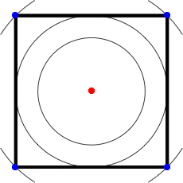
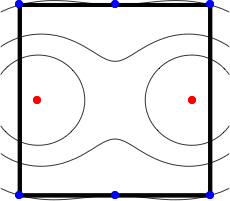
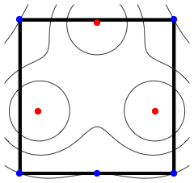
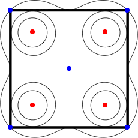
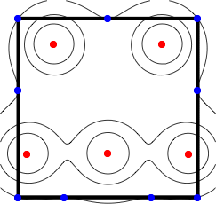
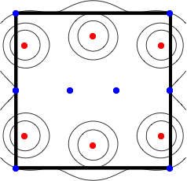

Consider the problem of placing n lights of unit brightness in a unit square so that the minimum light intensity I any point in the square receives (the sum of the squares of the reciprocals of the distances from the lights) is maximized. We show the best known configurations with the lights in black, and the points with minimum light intensity I in red.
  
  
1.
I = 2
Trivial.
2.
I = 24/5 = 4.8
Found by Erich Friedman
in July 2026.
3.
I = 7.50702+
Found by Erich Friedman
in July 2026.
4.
I = 17.72965+
Found by Erich Friedman
in July 2026.
5.
I = 21.34207+
Found by Erich Friedman
in July 2026.
6.
I = 29.73190+
Found by Erich Friedman
in July 2026.